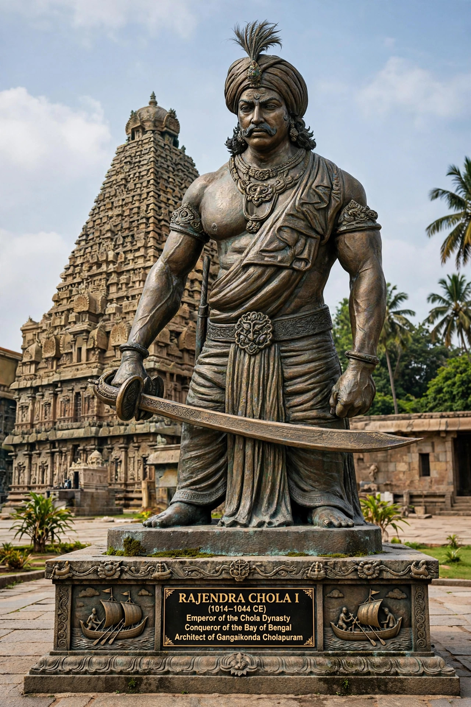

| Rajendra Chola I | |
|---|---|
| Reign | 1014–1044 CE |
| Father | Rajaraja Chola I |
| Capital | Gangaikonda Cholapuram |

Rajendra Chola I (died 1044), often called Rajendra the Great, was a Chola emperor who succeeded his father Rajaraja I in 1014 and extended the empire to its greatest extent.
Rajendra completed the conquest of Sri Lanka, subdued the Pandyas and Cheras, defeated the Western Chalukyas, and around 1019–1021 sent an army north to the Ganges, defeating Pala ruler Mahipala — earning the title Gangaikonda ('the Chola who conquered the Ganga') and founding Gangaikonda Cholapuram with its great temple and Cholagangam lake.
In 1025 Rajendra launched a major naval raid on the Srivijaya empire in Sumatra and the Malay Peninsula, capturing ports including Kadaram (Kedah). The motives — protection of Chola trade with Song China — and the long-term effects remain debated, but relations later normalised. He also maintained embassies to China.
Rajendra died at Brahmadesam in 1044 and was succeeded by Rajadhiraja Chola I.